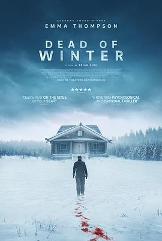

6.1
冬日之死
Dead of Winter
2025
德国
评分 6.1
导演:
布莱恩·柯克
演员:
艾玛·汤普森 / 朱迪·格雷尔 / 马克·门查卡 / 劳雷尔·马斯登 / 盖亚·怀斯 / Cúán Hosty-Blaney / Dalton Leeb
类型:
动作,惊悚
剧情简介
在风雪吞噬的明尼苏达北境，广袤的白色荒原无边无际。退休警探玛莎·汉密尔顿（艾玛·汤普森 饰）孤身驾着一辆老旧皮卡，沿着冰封公路穿行，试图忘却多年前丧女的痛苦。一个夜晚，她在结冰的湖畔发现被绑住双手的少女艾莉（劳雷尔·马斯登 饰），那一刻，静止的雪景被枪声和恐惧撕裂。玛莎救下少女，却意识到这并非普通绑架案。暴风雪使电台、信号塔全部瘫痪，孤立的二人只能在零下三十度的极寒中求生。随着时间推移，玛莎发现追捕她们的并非单一罪犯，而是一场更庞大的交易——涉及跨境走私、基因试验与政治暗杀的秘密。雪夜里，猎人与猎物的角色不断互换。导演布莱恩·柯克以冷峻的摄影捕捉北方冬夜的绝望：刺眼的白雪、断裂的树枝、血迹在冰面上晕开的轨迹，构成了全片最锋利的视觉语言。艾玛·汤普森的表演内敛而有爆发力——她的疲惫、愧疚与重燃的意志，让这场生死追逐充满人性温度。朱迪·格雷尔饰演的神秘特工在暗处操控局势，为故事注入更复杂的道德张力。暴风雪掩埋了路标，寒风裹挟着呼吸的白雾。玛莎在雪地里拉着艾莉的手，身后是燃烧的油罐车和逼近的脚步声。影片节奏紧凑，不依赖惊吓镜头，而以环境压迫感营造极致张力。每一场对峙都如冬夜的闪电，短暂、刺目、致命。《冬日之死》既是一部求生惊悚片，也是一部关于救赎与信念的故事。它让人明白：有时真正的寒冬，不在大地上，而在人心中。